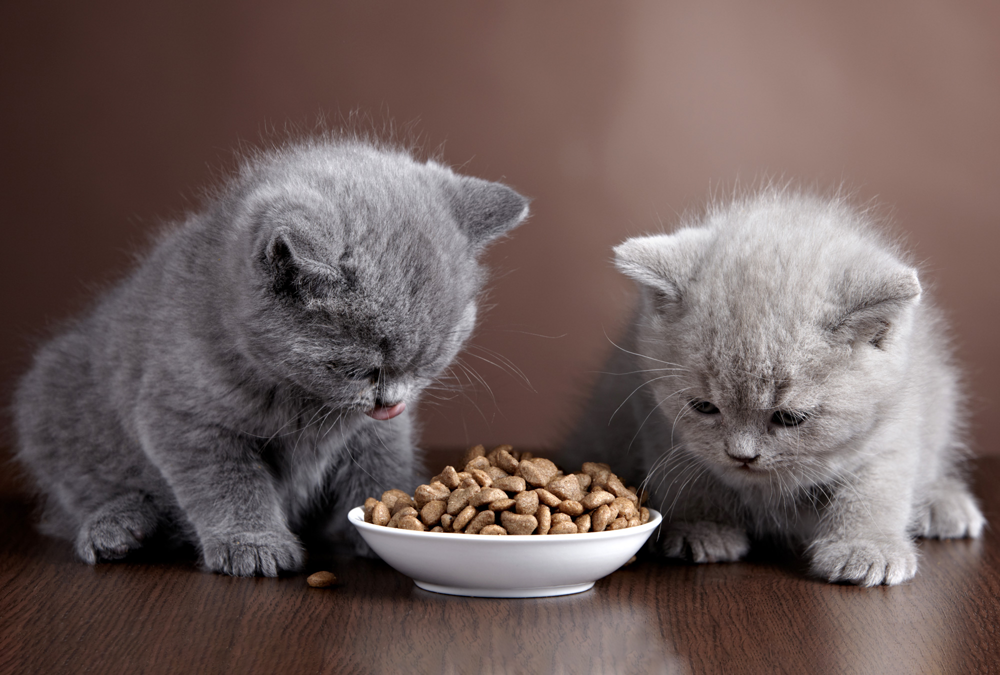
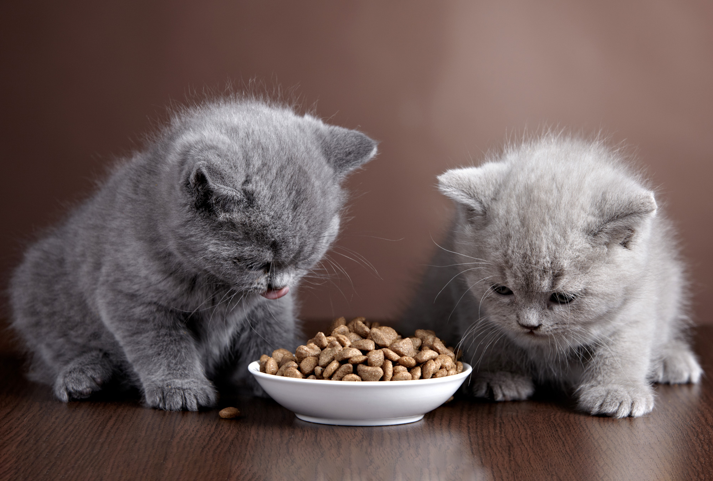
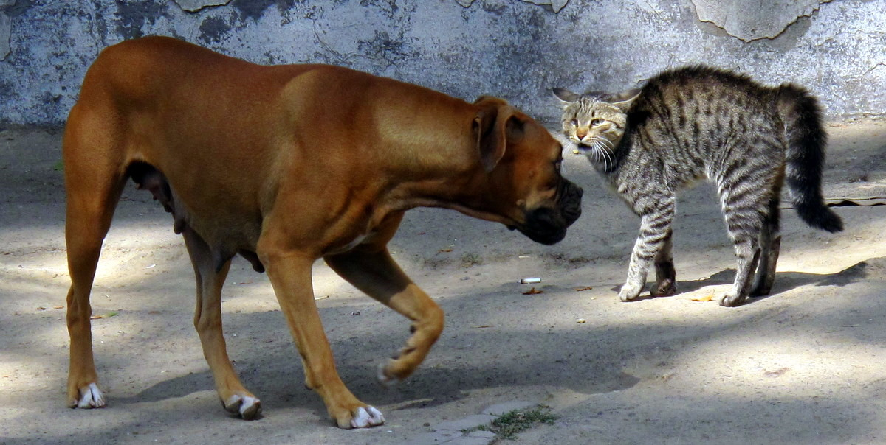

Gatos
 

Razas de gatos
- Siamés
- British shorthair
- Maine coon
Cosas que aman los gatos
- cazar
- cat nip
- tomar el sol
Gatos conquistando el mundo

Tashirojima, también conocida como la Isla del Gato, es seguramente uno de los lugares más populares del mundo habitados por los gatos. Y es que la población felina de esta pequeña isla de Japón es superior a la de los humanos, así que camines por donde camines verás gatos y gatos por todas partes.
La ciudad de Kuching, capital de la región de Sarawak en Malasia, en Borneo, es conocida asimismo como la Ciudad de los Gatos. Estos animales se han convertido en todo un símbolo en la ciudad. De hecho, los verás representados en los lugares más dispares: pinturas por toda la ciudad y esculturas en parques, en rotondas, en centros comerciales…
Son muchos los cafés gatunos que encontrarás por todo el mundo, pero si hay uno muy especial es el del Museo del Gato de San Petersburgo, que cuenta con una sala donde viven varios felinos, denominada la República de los Gatos. Aquí encontrarás 25 felinos de 17 razas diferentes. Para poder entrar en esta sala especial deberás lavarte las manos y ponerte unas fundas en los zapatos, todo para proteger la salud de los mininos. El museo de los gatos de San Petersburgo es el único de Rusia dedicado a estos animales, y abrió sus puertas en el año 2008.
Los gatos aman el catnip

El catnip es una planta muy versátil que permite múltiples aplicaciones para emplearla en el cuidado de tu mascota. A los gatos les gusta frotarse y mordisquearla cuando está cruda, por lo que si vives en una zona agreste, él mismo saldrá a buscarla. Si te encuentras con ella, puedes llevarte un esqueje y cultivarla en una maceta en casa, así siempre dispondrás de ella cuando necesites amansar a tu gato.
Las infusiones frías son también un remedio eficaz que actúa contra los picores aplicadas sobre la piel de tu gato. Ese mismo líquido filtrarlo y verterlo en un pulverizador para rociar la cama y las estancias en las que suele estar el minino. El catnip seco también está presente en los rascadores y los juguetes gatunos para contribuir al ejercicio activo y evitar el sobrepeso.
Las partículas de nepelactona que contiene el catnip se esparcen cuando tu gato se restriega o lame esta planta. Los animales atraviesan a continuación una serie de emociones, de la excitación inicial en que maúllan como en la época de celo y cazan pájaros e insectos imaginarios, hasta que terminan por relajarse en el lapso de quince minutos. Estos episodios placenteros ayudan a los gatos a reequilibrar su mente, por lo que no volverán a interesarse por el aroma del catnip hasta que pasen dos horas de su efecto.
Perros vs gatos
Los perros y los gatos tienen muchas diferencias, mientras un perro bate la cola porque está feliz, un gato lo hace porque está irritado. Cuando un gato arquea su lomo para ser acariciado, un perro lo hace en señal de ataque o porque se va a defender.
En ‘Web animales’, aseguran que entre especies no hay odio. Existe una reacción a cada instinto. En el caso de los perros, ellos estaban inicialmente capacitados para cazar; sin embargo, al adaptarse a ciudades, es más probable que se encuentren con gatos en la calle que con conejos.
Por ende, afirman que el instinto del perro le obliga a salir corriendo detrás del gato y el instinto del gato provoca que este escape.
Haz clic en esta imagen para una sorpresa